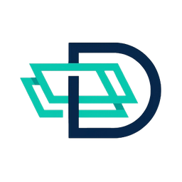

Deventory
Etkinliklerinizi cebinizde yönetin.
iOS · Android · Ücretsiz · Türkçe, İngilizce
Yakında App Store ve Google Play'de
Deventory, kurumların etkinliklerini yürüttüğü bir platformdur. Uygulama katılımcı tarafını cebe taşır: etkinlikleri görürsünüz, kayıt olursunuz, biletinizi QR olarak gösterirsiniz, programı takip eder ve değişiklikleri bildirim olarak alırsınız. Etkinlik sorumluları aynı uygulamadan bilet okutup yoklama alır.
Etkinlikler ve kayıt
Kurumunuzun etkinliklerini listeler, türüne göre süzer, kontenjan dolduysa yedek listeye girersiniz. Son kayıt tarihine geri sayım ekranda durur.
Biletiniz telefonunuzda
Bilet QR'ı altmış saniyede bir yenilenir. Ekran görüntüsü işe yaramaz; bu, biletin başkasına iletilmesini engeller.
Program ve hatırlatmalar
Günlük program, o an devam eden oturum ve kendi programınız tek ekranda. Etkinlik yaklaşınca, salon ya da saat değişince bildirim gelir.
Etkinlik duvarı ve anketler
Duyurular, katılımcı paylaşımları, yanıtlar ve anketler. Duvarı kimin görebileceğine etkinliği düzenleyen kurum karar verir.
Katılım belgeniz
Etkinlik sonunda belgeniz uygulamada durur. Salonda gösterilen QR'ı okutarak da alabilirsiniz.
Sorumlular için bilet okuma
Etkinlik sorumluları ve yöneticiler kamerayla bilet okutur, katılımcı listesini görür ve elle yoklama alır.